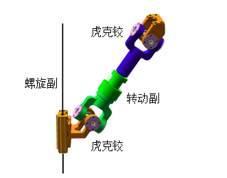

6-HTRT六自由度并联机器人
前言
读研期间完整完成一款 6-HTRT 平行导路型六自由度并联机器人全流程开发，从机构数学建模、运动学求解、动力学建模、精度误差标定到整套软硬件控制系统落地，走完仿真验证、实物实验全流程。
一、研究对象：6-HTRT 并联机器人构型基础
本次研究样机为 6-HTRT 六自由度对称并联机构，每条支链统一采用「螺旋移动副 + 虎克铰 + 中间转动副 + 虎克铰」串联结构，6 组驱动滑块沿平行导轨布置，动、定平台均呈 120° 环形对称铰点布局。

构型基础参数
- 定平台半径 220mm，动平台半径 130mm，单支标准杆长 200mm；
- 采用 RPY 角描述动平台六维位姿：$P=[X_p,Y_p,Z_p,\alpha,\beta,\gamma]$；
- 驱动方案为伺服电机搭配线性模组纯电驱动，轻量化、维护便捷，轴向伸缩行程优势明显。
构型优劣势对比
串联机器人，该机构天然高刚度、无末端误差累积、负载自重比更优；但存在运动学高度耦合、位置正解求解困难、结构加工装配误差直接影响定位精度三大核心难点，也是本次课题重点攻关内容。
二、核心模块 1：运动学正逆解算法设计与仿真验证
运动学是并联机器人控制底层基础，分为逆解（已知末端位姿求驱动轴位移）、正解（已知驱动位移求末端位姿）两大核心计算模块。
2.1 位置逆解：几何矢量解析法
并联机构逆解天然存在显式解析解，整体建模流程：
- 建立动、定平台全局坐标系，通过旋转矩阵转换动平台铰点在定系下的三维坐标；
- 构建单支链闭环矢量方程，利用向量叉乘求解铰点到导轨垂直距离，快速判断目标位姿是否机械可达；
- 对向量进行投影分解，计算驱动轴位移，根据机构装配约束剔除无效数学根，得到唯一有效解。
验证方案：基于 C# + Managed DirectX 自研轻量化 3D 可视化仿真程序，输入任意六维末端位姿，实时渲染整机运动姿态并同步输出六轴驱动数值。经过上万组点位交叉校验，算法求解稳定无错解，可直接集成至控制程序实时运算。
2.2 位置正解：泰勒拟合初值 + 牛顿迭代优化
并联机构无通用解析正解，传统零初始值牛顿迭代存在收敛空间小、易发散缺陷，本文提出优化求解方案：
- 驱动参数降维：利用机构 Z 向运动完全解耦特性，6 维驱动输入简化为 5 维，大幅降低计算复杂度；
- 8 阶泰勒多项式最小二乘拟合：采集 60 余万组全覆盖可达空间点位样本，拟合位姿近似值，作为牛顿迭代初始值；
- 迭代约束：设定收敛精度 0.0005，最大迭代次数 15 次，迭代达标输出位姿，不收敛抛出状态告警。
实测与仿真验证
- 收敛性能：优化初值后收敛空间大幅扩张，仅支链与底板夹角小于 6° 的空间边界点位出现不收敛，该区域本身易发生机械干涉，实际运行可直接规避；
- 计算效率：求解速度可达 1000Hz，完全满足工控系统实时计算需求；
- 数字化仿真：在 DELMIA 中搭建完整机构虚拟样机，复现各类运动轨迹，正解输出位姿与理论轨迹完全吻合。
三、核心模块 2：基于影响系数与凯恩法的动力学建模
动力学用于分析机构运动过程各轴驱动力，支撑电机选型校核、高速运动与负载工况设计。
3.1 一、二阶影响系数法求解构件运动参数
放弃复杂直接求导运算，选用通用性更强的影响系数法，可标准化求解任意并联机构运动参数：
- 一阶影响系数：求解所有构件线速度、角速度，直接推导机构雅克比矩阵；
- 二阶影响系数：构建三维海塞矩阵，批量计算全部构件质心加速度；
- 整套方法流程固定、易于代码封装，无需针对不同支链结构重复推导公式。
3.2 凯恩法构建逆向动力学方程
选择凯恩法建立刚体动力学模型，核心优势无需求解支链内部约束力，简化方程规模：
- 使用 SolidWorks 三维模型提取全部 31 个运动构件的质量、质心坐标、惯性张量；
- 结合影响系数输出的速度、加速度参数，统一计算构件重力、惯性力与惯性力矩；
- 联立 6 组广义速度凯恩方程，反向求解 6 根丝杠所需轴向驱动力。
3.3 仿真对标与实物负载实验双重验证
- ADAMS 虚拟样机对标：设置相同运动轨迹与末端负载，凯恩法计算驱动力与 ADAMS 牛顿-欧拉仿真结果偏差小于 1N，相对误差 0.5% 以内，动力学模型精度可靠；
- 电机理论校核：选取机构受力最恶劣姿态，极限轴向负载 1600N，伺服电机额定输出留有充足安全余量；
- 250kg 实物静载实验：动平台满负荷加载后，各轴无抖动、无稳态定位偏移，机构承载性能达标，为后续高速运动、力控开发提供动力学底层模型。
四、核心模块 3：矢量微分法静态误差建模与迭代标定
机械加工、装配带来的结构参数误差是机器人末端定位误差主要来源，本文搭建完整误差建模、测量、参数辨识、补偿全流程。
4.1 全维度结构误差方程
基于单支链闭环矢量微分推导误差模型，共纳入 60 项机械系统误差参数：支杆长度误差、动/定平台铰点坐标误差、导轨方向向量误差；伺服光栅闭环反馈微小误差量级极低，可忽略不计。
4.2 基于激光跟踪仪迭代参数辨识
测量设备采用 Leica AT901-B 激光跟踪仪，微米级三维坐标测量精度；通过动平台 3 个不共线标定点，结合 SVD 分解算法反推动平台六维实际位姿。
完整标定流程：
- 在整机可达空间内均匀采集 5000 余组点位三维坐标；
- 利用名义结构参数通过运动学正解计算理论位姿，得到理论与实际位姿偏差；
- 采用 Tikhonov 正则化处理病态误差矩阵，迭代修正全部 60 项结构误差参数，循环至误差收敛。
4.3 标定实测效果
标定前整机平均定位误差 2.906mm，经过多轮迭代补偿后平均定位误差降至 0.048mm，整体误差压缩至原来 1/5；标定前误差呈规律性分布（系统性机械偏差），标定后误差符合正态随机分布，机构固有系统误差基本消除。
现存局限：当前误差模型未计入运动副间隙、构件弹性形变，极限高精度工况仍有优化空间。
五、核心模块 4：分层式软硬件一体化控制系统开发
控制系统采用「上位计算软件 + 多轴运动控制器 + 伺服双闭环执行单元」分层架构，适配六自由度并联机器人专属运动逻辑。
5.1 硬件整体架构
- 执行层：松下伺服电机 + 同步带传动，线性模组搭载 0.1μm 分辨率增量光栅，与电机内置绝对编码器形成双位置冗余检测；
- 控制层：专用六轴运动控制器，支持 EtherCAT、485 总线，硬件级插补、限位与故障信号实时采集；
- 传感层：六轴正负软硬限位、伺服故障、电机刹车信号实时接入控制器 IO 端口。
5.2 C# Winform 上位控制软件
基于 .NET 框架 + Math.NET 数值计算库开发，可独立运行也可集成至大型设备总控软件，核心功能模块：
运动学计算模块
实时正逆解换算，超出工作空间自动弹窗告警。
多模式运动调试
- 单轴点动：慢速、中速、高速三档速度可调；
- 多轴插补点到点：支持绝对坐标、相对坐标两种运动模式；
- 笛卡尔空间示教：自定义平移、旋转步长，直接控制动平台六维运动。
全周期状态监控
每 200ms 刷新六轴驱动位移、动平台实时六维位姿、全部 IO 限位与伺服报警状态。
有限状态机安全逻辑
划分未连接、未初始化、就绪、报警四大运行状态；故障触发立即锁死电机刹车，分级错误码快速定位故障源头。
空间法线姿态优化算法
输入任意空间法向量，自动求解最优动平台姿态，避免单轴超大旋转角度靠近奇异位形。
5.3 系统数据通讯
基于 ADS 实时总线完成上下位数据交互，上位机可实时下发运动点位指令，同步读取机器人六维位姿、各轴驱动数据，支持对外输出数据用于数字孪生、多设备协同运动调度。